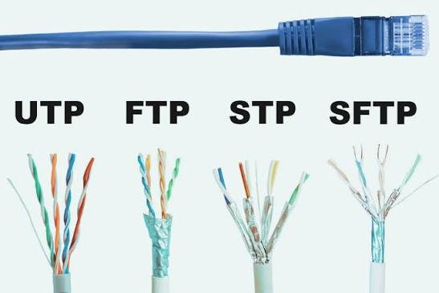
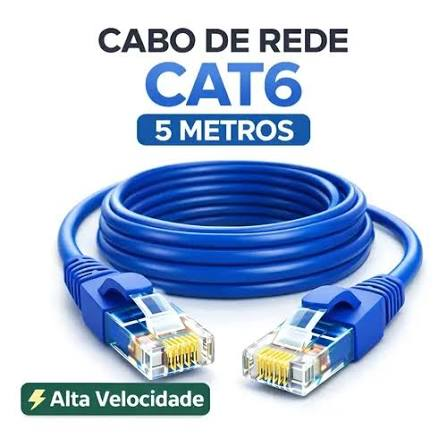
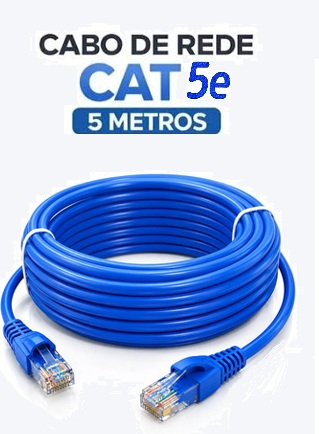
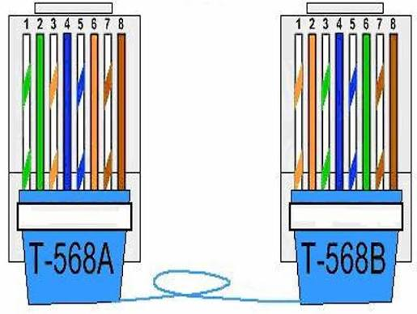
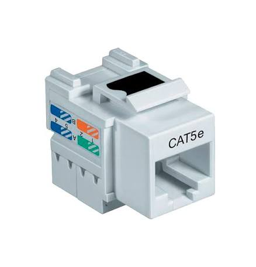
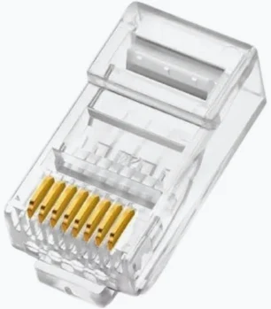
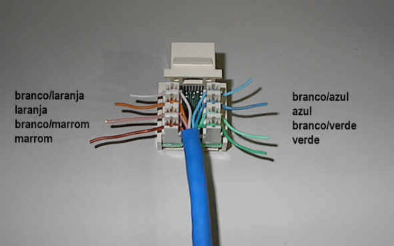
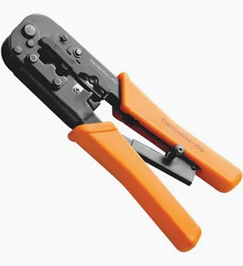

1 Par trançado
É um tipo de cabo de rede formado por pares de fios de cobre entrelaçados para cancelar interferências eletromagnéticas e ruídos.
🌀 Trançado dos fios
Os pares são torcidos juntos para anular ruídos externos e interferências entre os próprios cabos, o chamado crosstalk (diafonia).
⚖️ Sinal balanceado
Um fio carrega o sinal positivo e o outro o negativo (ou a referência de terra). Isso neutraliza as perturbações elétricas captadas no caminho.

2 Categorias
| Característica | Cat5e | Cat6 |
|---|---|---|
| Nome | Categoria 5 Aprimorada | Categoria 6 |
| Pares | 4 pares de cobre trançados | 4 pares de cobre trançados |
| Frequência | até 100 MHz | até 250 MHz |
| Velocidade | 1 Gbps a 100 m | 10 Gbps até 37–55 m · 1 Gbps a 100 m |
| Construção | Simples e econômica | Trançamento mais justo e separador interno (cruzeta) contra o crosstalk |
| Uso típico | Redes locais rápidas, estáveis e baratas | Redes que precisam de mais desempenho |


3 Sequência do cabo par trançado
Com a trava do RJ45 virada para baixo e os contatos para você, os pinos são contados da esquerda para a direita (1 → 8). Alterne entre os padrões:
💡 Mesmo padrão nas duas pontas = cabo direto. Uma ponta A e outra B = cabo cruzado (crossover).

4 Conector RJ45
Interface física padronizada, geralmente de plástico transparente, usada nas pontas dos cabos Ethernet para conectar computadores, roteadores, switches e modems.



5 Alicate de crimpagem
Ferramenta manual indispensável para profissionais de telecomunicações, redes, elétrica e eletrônica.
📖 O que é “crimpar”?
Do inglês crimping: prensar, deformar ou moldar uma peça plástica ou metálica para fixar firmemente um cabo a um conector, garantindo a transmissão de dados ou energia sem solda.

6 Etapas de crimpagem
Clique em cada etapa para vê-la em detalhe. Marque ✔ quando concluir na prática.